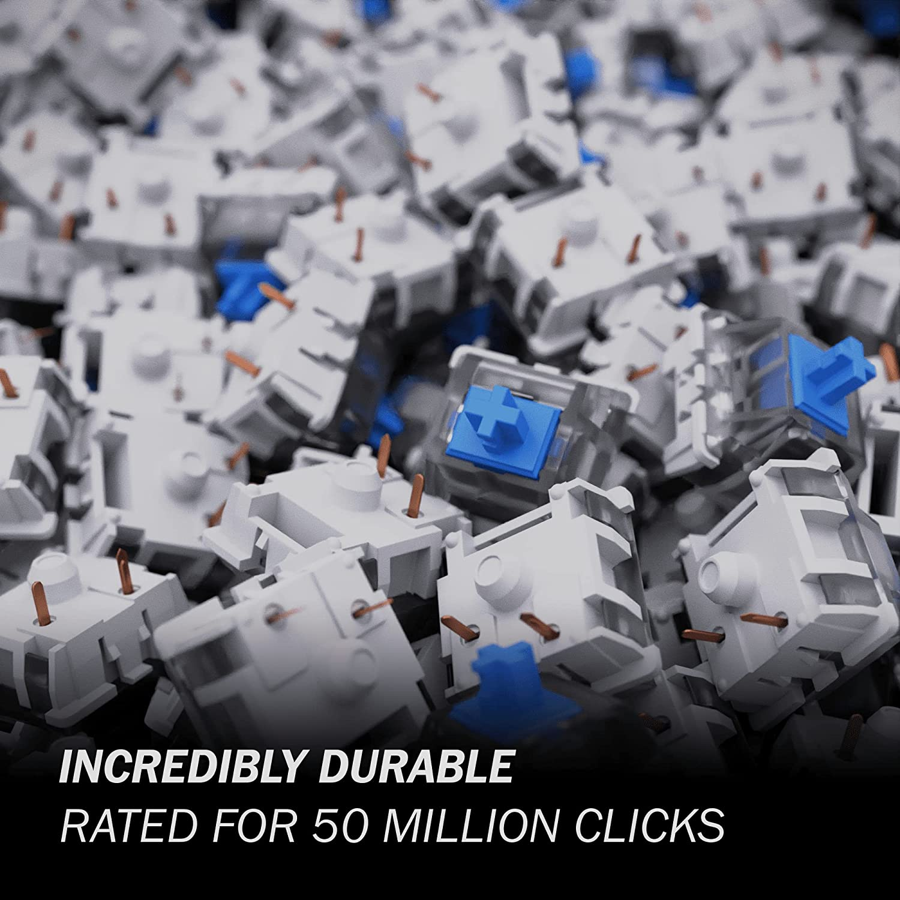

BLUE SWITCHES

Blue switches are the most clicky switches. They are the loudest and have the most tactile feedback. They are the best for typing but not for gaming. They are the best for typing because of the tactile feedback and the clicky sound. The tactile feedback is the bump you feel when you press the key down. The clicky sound is the sound the switch makes when you press the key down!
Actuation Force 50-60mg
Actuation Point 2.0mm
Tactility:
Typing Feel Tactile
Best Use Cases Typing, Programming, Gaming
